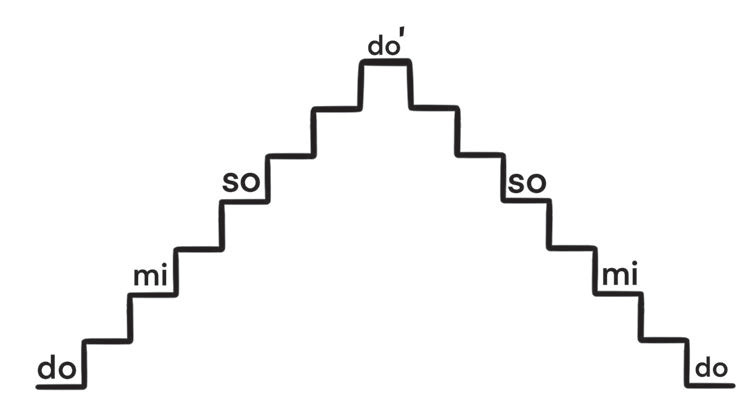
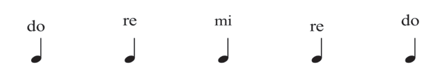
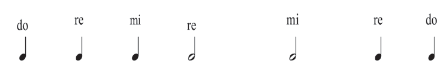
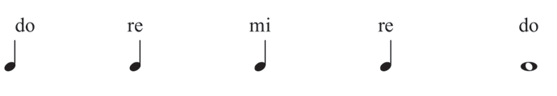

(b)

Activity 5
Based on the number of beats in the first table, sing the following solfa syllable notes:
- (a)

- (b)

- (c)

(b)

Based on the number of beats in the first table, sing the following solfa syllable notes:


